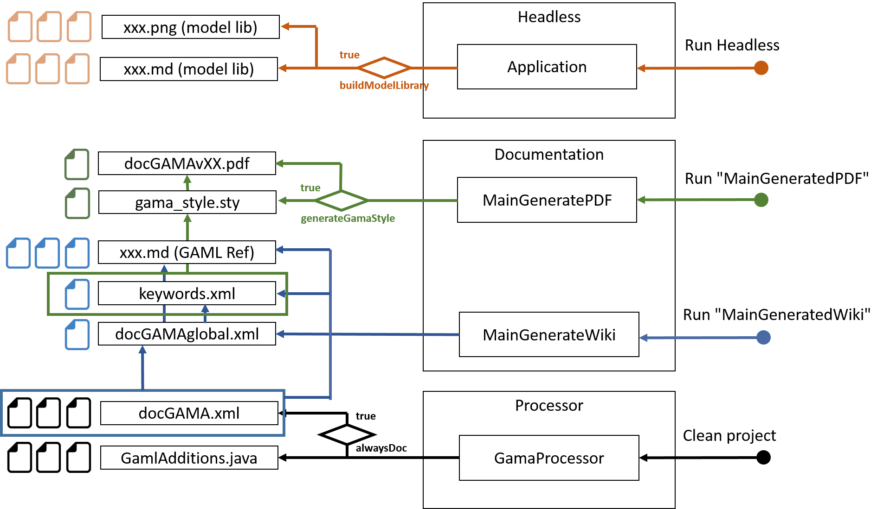

Table of contents
- Requirements
- Workflow to generate wiki files
- Workflow to generate PDF files
- Workflow to generate unit tests
- Main internal steps
- How to document
- How to change the processor
- General workflow of file generation
Documentation
The GAMA documentation comes in 2 formats: a set of wiki files availaible from the wiki section of the GitHub website and a PDF file. The PDF file is produced from the wiki files.
In the wiki files, some are hand-written by the GAMA community and some others are generated automatically from the Java code and the associated java annotations.
The section summarizes:
- how to generate this wiki files,
- how to generate the PDF documentation,
- how to generate the unit tests from the java annotations,
- how to add documentation in the java code.
Requirements
To generate automatically the documentation, the GAMA Git version is required. See Install Git version for more details.
Among all the GAMA plugins, the following ones are related to documentation generation:
msi.gama.processor: the java preprocessor is called during java compilation of the various plugins and extract information from the java code and the java annotations. For each plugin it produces thedocGAMA.xmlfile in thegamldirectory.msi.gama.documentation: it contains all the java classes needed to gather all thedocGAMA.xmlfiles and generate wiki, pdf or unit test files.
In addition, the folder containing the wiki files is required. In the GitHub architecture, the wiki documentation is stored in a separate Git repository https://github.com/gama-platform/gama.wiki.git. A local clone of this repository should thus be created:
- Open the Git perspective:
- Windows > Open Perspective > Other…
- Choose
Git
- Click on “Clone a Git repository”
- In Source Git repository window:
- Fill in the URI label with:
https://github.com/gama-platform/gama.wiki.git - Other fields will be automatically filled in. * In Branch Selection windows,
- check the master branch
- Next * In Local Destination windows,
- Choose the directory in which the gama Git repository has been cloned
- Everything else should be unchecked
- Finish
- In the Git perspective and the Git Repositories view, Right-Click on “Working Directory” inside the
gama.wikirepository, and choose “Import projects”- In the Select a wizard to use for importing projects window:
- “Import existing projects” should be checked
- “Working Directory” should be selected * In Import Projects window:
- Uncheck « Search for nested project »
- Check the project
gama.wiki - Finish
- Go back to the Java perspective: a
gama.wikiplugin should have been added.
In order to generate the PDF file from the wiki files, we use an external application named Pandoc.
Follow the Pandoc installation instructions to install it. Specify the path to the pandoc folder in the file “Constants.java”, in the static constant CMD_PANDOC : “yourAbsolutePathToPandoc/pandoc”.
Note that Latex should be installed in order to be able to generate PDF files. Make sure you have already installed Miktex (for OS Windows and Mac). Specify the path to the miktex folder in the file “Constants.java”, in the static constant CMD_PDFLATEX : “yourAbsolutePathToMiktex/pdflatex”.
Configuration
The location where the files are generated (and other constants used by the generator) are defined in the file msi.gama.documentation/src/msi/gama/doc/util/Constants.java.
The use of Pandoc (path to the application and so on) is defined in the file msi.gama.documentation/src/msi/gama/doc/util/ConvertToPDF.java. This should be changed in the future…
Generated files location
The generated files are (by default) generated in various locations depending on their type:
- wiki files: they are generated in the plugin
gama.wiki. - pdf file: they are generated in the plugin
msi.gama.documentation, in the folderfiles/gen/pdf. - unit test files: they are generated in the plugin
msi.gama.models, in the foldermodels/Tests.
Workflow to generate wiki files
The typical workflow to generate the wiki files is as follow:
- Clean and Build all the GAMA projects,
- Run the
MainGenerateWiki.javafile in themsi.gama.documentation, - The wiki files are generated in the
gama.wikiplugin.
Workflow to generate PDF files
The typical workflow to generate the wiki files is as follow:
- Clean and Build all the GAMA projects,
- In the file mytemplate.tex, specify the absolute path to your “gama_style.tex” (it should be just next to this file)
- Run the
MainGeneratePDF.javafile in themsi.gama.documentation, accepting all the packages install of latex, - The wiki files are generated in the
msi.gama.documentationplugin.
Note that generating the PDF takes a lot of time. Please be patient !
If you want to update the file “gama_style.sty” (for syntax coloration), you have to turn the flag “generateGamaStyle” to “true” (and make sure the file “keywords.xml” is already generated).
Workflow to generate unit tests
The typical workflow to generate the wiki files is as follow:
- Clean and Build all the GAMA projects,
- Run the
MainGenerateUnitTest.javafile in themsi.gama.documentation, - The wiki files are generated in the
msi.gama.modelsplugin.
Main internal steps
- Clean and Build all the GAMA projects will create a
docGAMA.xmlfile in thegamldirectory of each plugin, - The
MainGenerateXXX.javafiles then perform the following preparatory tasks:- they prepare the gen folder by deleting the existing folders and create all the folders that may contain intermediary generated folders
- they merge all the
docGAMA.xmlfiles in adocGAMAglobal.xmlfile, created in thefiles/gen/java2xmlfolder. Only the plugins that are referred in the product files are merged.
After these common main first steps, each generator (wiki, pdf or unit test) performs specific tasks.
Generate wiki files
- The
docGamaglobal.xmlis parsed in order to generate 1 wiki file per kind of keyword:- operators,
- statements,
- skills,
- architectures,
- built-in species,
- constants and units.
- in addition an index wiki file containing all the GAML keywords is generated.
- One wiki file is generated for each extension plugin, i.e. plugin existing in the Eclipse workspace but not refered in the product.
Generate pdf files
The pdf generator uses the table of content (toc) file located in the files/input/toc folder (msi.gama.documetation plugin) to organize the wiki files in a pdf file.
MainGeneratePDF.javafile parsers the toc file and create the associated PDF file using the wiki files associated to each element of the toc. The generation is tuned using files located in thefiles/input/pandocPDFfolder.
Generate unit test files
MainGenerateUnitTest.javacreates GAMA model files for each kind of keyword from thedocGAMAglobal.xmlfile.
How to document
The documentation is generate from the Java code thanks to the Java additional processor, using mainly information from Java classes or methods and from the Java annotations. (see the list of all annotations for more details about annotations).
The @doc annotation
Most of the annotations can contain a @doc annotation, that can contain the main part of the documentation.
For example, the inter (inter) operator is commented using:
@doc(
value = "the intersection of the two operands",
comment = "both containers are transformed into sets (so without duplicated element, cf. remove_deplicates operator) before the set intersection is computed.",
usages = {
@usage(value = "if an operand is a graph, it will be transformed into the set of its nodes"),
@usage(value = "if an operand is a map, it will be transformed into the set of its values", examples = {
@example(value = "[1::2, 3::4, 5::6] inter [2,4]", equals = "[2,4]"),
@example(value = "[1::2, 3::4, 5::6] inter [1,3]", equals = "[]") }),
@usage(value = "if an operand is a matrix, it will be transformed into the set of the lines", examples =
@example(value = "matrix([[1,2,3],[4,5,4]]) inter [3,4]", equals = "[3,4]")) },
examples = {
@example(value = "[1,2,3,4,5,6] inter [2,4]", equals = "[2,4]"),
@example(value = "[1,2,3,4,5,6] inter [0,8]", equals = "[]") },
see = { "remove_duplicates" })
This @docannotation contains 5 parts:
- value: describes the documented element,
- comment: a general comment about the documented element,
- usages: a set of ways to use the documented element, each of them being in a
@usageannotation. The usage contains mainly a description and and set of examples, - examples: a set of examples that are not related to a particular usage,
- see: other related keywords.
the @example annotation
This annotation contains a particular use example of the documented element. It is also used to generate unit test and patterns.
The simplest way to use it:
@example(value = "[1::2, 3::4, 5::6] inter [2,4]", equals = "[2,4]")
In this example:
valuecontains an example of use of the operator,equalscontains the expected results of expression in value.
This will become in the documentation:
list var3 <- [1::2, 3::4, 5::6] inter [2,4]; // var3 equals [2,4]
When no variable is given in the annotation, an automatic name is generated. The type of the variable is determined thanks to the return type of the operator with these parameters.
This example can also generate a unit test model. In this case, the value in the variable will be compared to the equals part.
By default, the @example annotation has the following default values:
isTestOnly=false, meaning that the example will be added to the documentation too,isExecutable=true, meaning that content ofvaluecan be added in a model and can be compiled (it can be useful to switch it to false, in a documentation example containing name of species that have not been defined),test=true, meaning that the content of value will be tested to the content of equals,isPattern=false.
How to document operators
A GAML operator is defined by a Java method annoted by the @operator annotation (see the list of all annotations for more details about annotations). In the core of GAMA, most of the operators are defined in the plugin msi.gama.core and in the package msi.gaml.operators.
The documentation generator will use information from:
- the
@operatorannotation:value: it provides the name(s) of the operator (if an operator has several names, the other names will be considered as alternative names)category: it is used to classified the operators in categories
- the
@docannotation, - the method definition:
- the return value type
- parameters and their type (if the method is static, the IScope attribute is not taken into account)
How to document statements
A GAML statement is defined by a Java class annoted by the @symbol annotation (see the list of all annotations for more details about annotations). In the core of GAMA, most of the statements are defined in the plugin msi.gama.core and in the package msi.gaml.statements.
The documentation generator will use information from:
@symbolannotation,@facetsannotation (each facet can contain a documentation in a@docannotation),@insideannotation (where the statement can be used),@docannotation
How to document skills
A GAML skill is defined by a Java class annoted by the @skill annotation (see the list of all annotations for more details about annotations). In the core of GAMA, most of the skills are defined in the plugin msi.gama.core and in the package msi.gaml.skills.
The documentation generator will use information from:
@skillannotation,@varsannotation (each var can contain a documentation in a@docannotation),@docannotation
How to change the processor
If you make some modifications in the plugin processor, you have to rebuild the .jar file associated to the processor to take in account the changes. Here are the several steps you have to do :
- In the “processor” plugin, open the plugin.xml.
- In exporting (from the Overview tab), click on Export Wizard.
- In the tab “Destination”, choose processor/plugins for the directory. In the tab “Options”, delete the field Qualifier replacement. Click “finish”.
- Right click on the folder “processor” to refresh. –> It’s ok !
General workflow of file generation
This following diagram explains roughly the workflow for the generation of the different files : 